Voice home or keyboard home
With Voice home on, the keyboard opens to a large microphone and one full-width Keyboard button. Tap the mic to dictate. After a dictation you stay mic-ready; tap Keyboard to edit by typing. A genuine refocus on a text field returns you to your chosen home.
- Nothing records until you tap the microphone.
- Password and number fields always keep their keys.
- Output language and writing style stay with the result.
- Turn it on or off in Settings → Dictation → Use voice as home. Existing installs stay keys-first until you opt in.
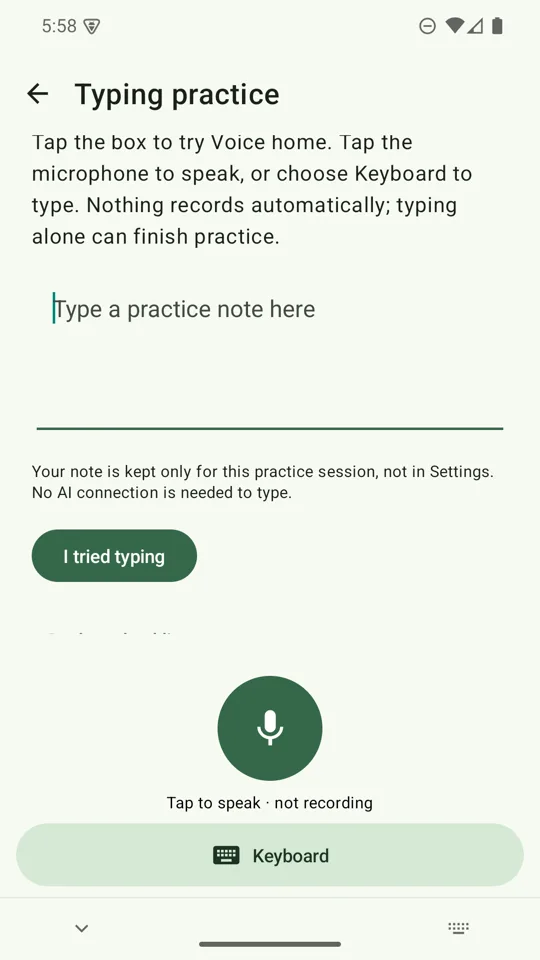
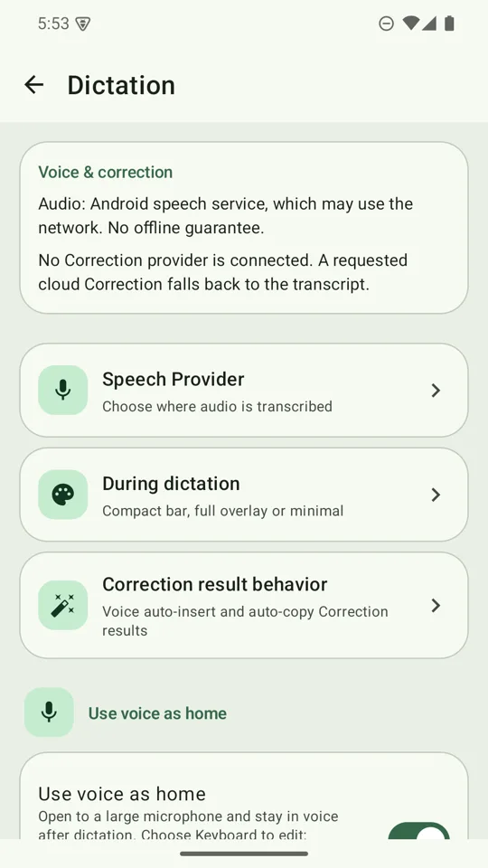
Dictation
Tap the microphone, speak, then stop. The result appears in a preview panel with a badge naming the model that produced it (Android's built-in recogniser shows no badge, because it runs on your phone and has no model to name).
| Provider | How it works | Key | Network |
|---|---|---|---|
| Offline: SenseVoice | Runs on your phone after a one-time ~228 MiB download. The panel fills with live draft text while you speak; Stop transcribes the full recording for the final text. Japanese, Mandarin, Korean, Cantonese and English only. | None | Only for the one-time download |
| Android speech | Your phone's own speech service. Language support depends on the service. | None | Depends on the service; it may use the network |
| Groq Whisper (large-v3) | Audio is sent in pause-aligned 20–30 second chunks while you speak, so long messages appear progressively. A failed chunk is retried once; text that did succeed is kept. | Groq key | Yes, direct to Groq |
| Gemini Live (3.1 Flash Live) | Streams a transcript. It arrives at pauses rather than word by word, and Japanese and Chinese come back without stray spaces. | Gemini key | Yes, direct to Google |
Choose the provider in Settings → Dictation → Speech provider. For online providers, Speech language defaults to Auto-detect; Gemini treats an explicit choice as a hint. Deleting the offline pack or clearing a key asks for confirmation and tells you that a selected provider will fall back to Android speech.
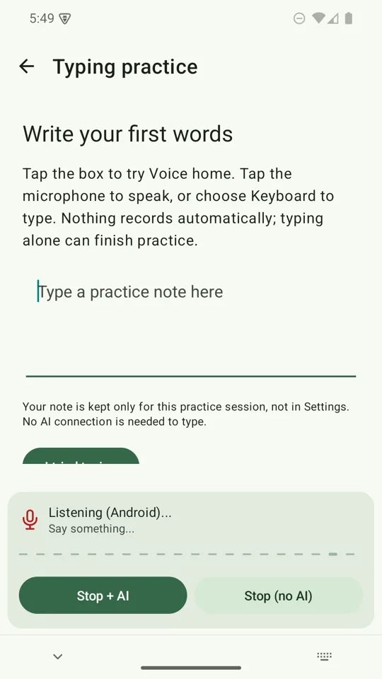
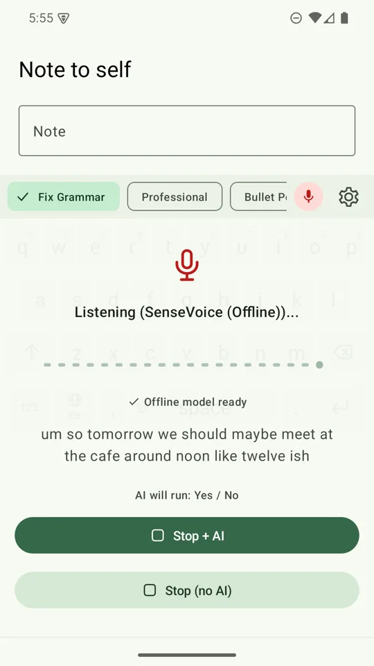
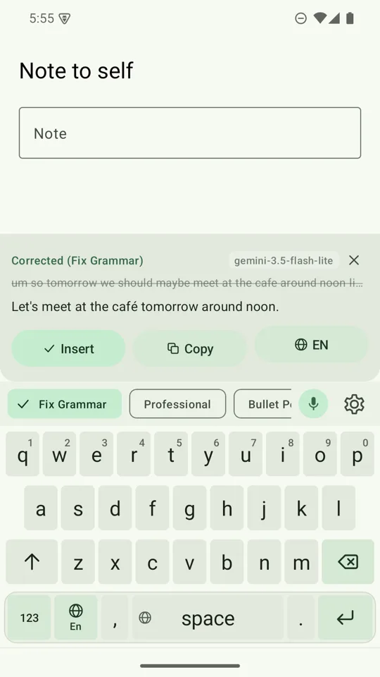
Stop + AI, or Stop (no AI)
- Stop + AI applies your selected writing style to the transcript. Tapping the mic to stop does the same: your words are inserted right away, then swapped for the cleaned version when the AI finishes. If the AI fails or you move on, your original words stay.
- Stop (no AI) inserts the transcript as it is. An automatic stop after silence also inserts without AI.
- Deselect every writing style and AI cleanup is off. Your speech provider still handles the audio.
If a speech provider is not set up, a style is selected but no key is saved, a reply comes back cut off, or a field refuses voice input, the keyboard says so in its own panel.
Writing styles
The chips above the keys are your writing styles. Eight ship built in:
- Fix Grammar
- Professional
- Bullet points
- Casual
- Concise
- Summary
- Reply-ready
- To-do List
Bullet points turns a scrambled thought into a short clean list of up to six bullets, with no padding and with names and numbers exactly as you said them. Reply-ready turns rambling fragments into a message you can send. All eight work with Gemini, with Groq, and with the free on-device model.
In Settings → Writing styles you can drag a style's handle (or use Move up / Move down) to reorder, add your own custom prompts, and turn individual styles on or off. New built-in styles are added at the end and never reorder or overwrite your own.
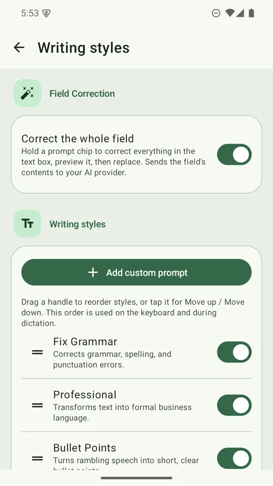
Fix the whole message with one hold
- Hold a style chipThe keyboard captures everything in the text box and rewrites it under that style.
- Read the previewThe original is shown struck through. Tap a different chip to re-run the same text in another style.
- Tap ReplaceThe message is rewritten in place. If you typed while it was thinking, it asks instead of overwriting.
- Undo if you wantA five-second Undo bar sits above the keys after every replace.
It refuses outright in password, email, address, phone, number and date fields, before anything leaves your phone, and it will not replace a truncated result. You can switch Field Correction on or off in Settings → Writing styles.
Cloud or on-device rewriting
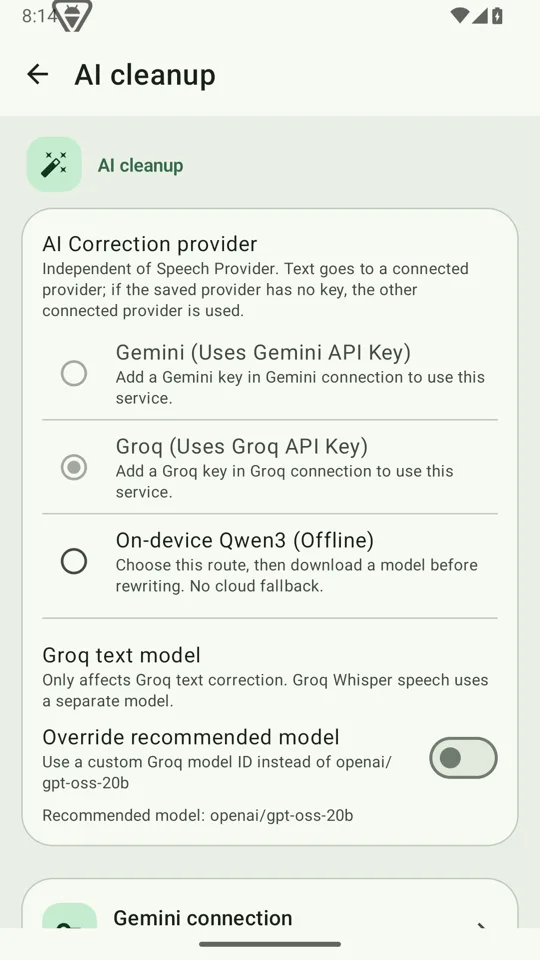
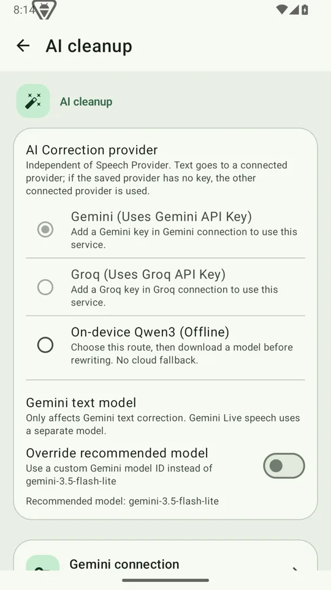
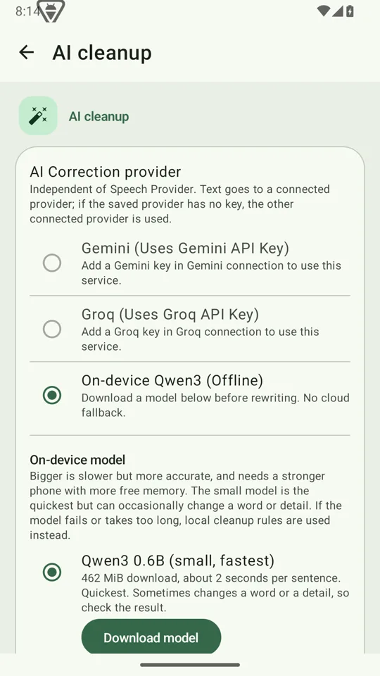
Choose who rewrites in Settings → AI cleanup. Gemini and Groq send your text directly to that provider using your key. On-device runs a Qwen3 model (0.6B or 1.7B, downloaded on demand) on your phone, with no key and no network. With the on-device model selected, it prepares while you dictate, so there is less waiting after Stop.
Answer in another language
Every result names the language it came back in on the Language Chip.
- Tap to switch to the next language on your shortlist and re-run the same text.
- Hold and slide down the column, then lift on the one you want. Release without sliding and nothing changes.
- Switching on the chip changes the Output Language setting, by design. It is what you see next time you open Settings.
- Choose the shortlist in Settings → Languages → Language Shortlist. Available languages include English, Japanese, Korean, Traditional and Simplified Chinese, Spanish, French, German and Portuguese.
Output Language applies to AI rewriting. It does not change the offline or Android recogniser or your keyboard layout.
Type Japanese and Chinese
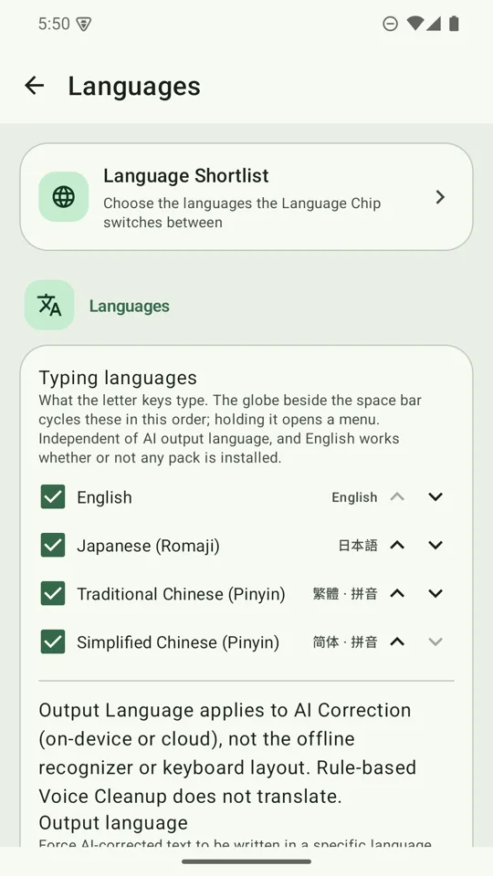
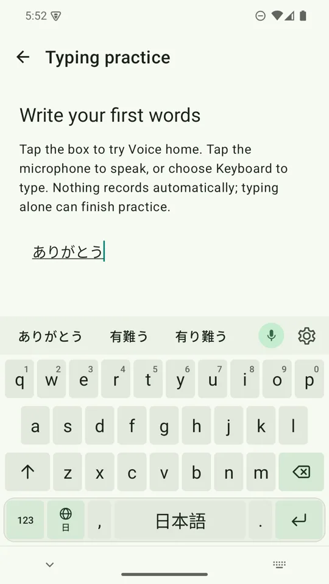
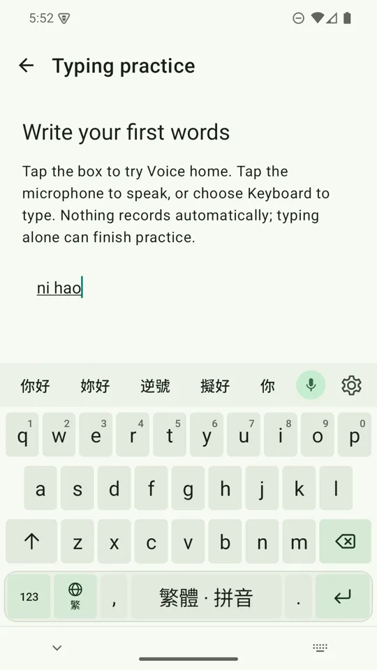
- Add the languagesSettings → Languages → Typing languages → Add Japanese and Chinese. Tick the ones you want: Japanese (romaji), Traditional Chinese (pinyin), Simplified Chinese (pinyin).
- Switch with the globeTap the globe key beside the space bar to cycle through your typing languages. The space bar names the current one.
- Type and pickType romaji (
arigatoubecomes ありがとう) or pinyin (nihaobecomes 你好) and choose from the conversion candidates above the keys.
This runs entirely on the phone. There is no network call and no key, and it works in airplane mode. It is separate from AI rewriting.
Typing help and gestures
- Suggestion strip. Words appear above the keys as you type; tap one to swap it in. Words it does not recognise get a quiet underline.
- Auto-fix. Obvious typos fix themselves on space (“teh ” becomes “the ”). One backspace puts your word back and teaches the keyboard to leave it alone.
- Next-word prediction. After a word, the strip offers what usually comes next.
- Digits. Hold a top-row key for its digit:
qis 1 throughpis 0. - Punctuation palette. Hold
.or,for sixteen marks in two rows. Slide and lift to type one. - Hold backspace. It deletes characters first and switches to whole words after about a second, with a buzz at the switch. It stops at line breaks. A tap deletes exactly one character.
All typing help runs on the phone against a dictionary built into the app. Learned words stay on your device, and you can review and delete them in Settings. It switches itself off in password, email, URL, phone and number fields. Turn parts of it off in Settings → Typing & feel.
Rewrite text from other apps
Select text in a supported app and choose AI Keyboard from the text-selection menu, or share text to it. Apply a style, then replace, copy or share the result.
Where things are in Settings
| Destination | What lives there |
|---|---|
| Keyboard walkthrough | Activation checklist and the practice box |
| Dictation | Speech provider, offline voice pack, speech language, Voice home, result behaviour |
| AI cleanup | Gemini, Groq or On-device, and the model controls for the selected one |
| Typing & feel | Typing assistance, learned words, haptics, key sound, Keyboard style (Sprout or Classic) |
| Languages | Typing languages, Output Language, Language Shortlist |
| Writing styles | Built-in and custom styles, order, Field Correction |
| Cloud & privacy | Groq and Gemini keys, token usage statistics |
| Help & About | Keyboard setup recovery, troubleshooting, version |